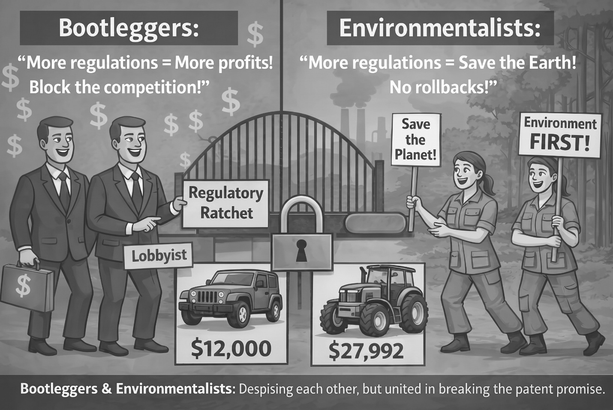
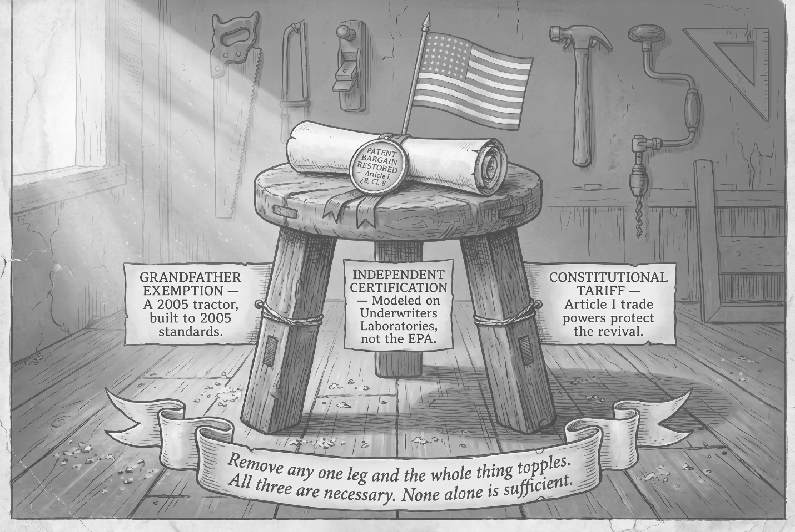

The Forgotten Half of the Patent Clause
How Federal Regulations Doubled the Cost of American Living and Rewrote the Constitution
A constitutional-law litigation strategy and a citizen’s playbook — in one book.
This is the opening chapter of the book. It states the problem in plain language: four things going wrong in American life right now, one cause beneath all four, and one remedy that reaches all four at once. No legal training is needed to read it. Everything that follows in the book is the evidence for what this chapter claims.
This chapter was written to be read on paper. The web edition does not print a URL beside each source. Instead, a small grey mark follows each citation, and the mark is a link:
* — one asterisk, after any book, article, statute, regulation, or dataset. It opens the endnotes apparatus.
** — two asterisks, after any Supreme Court case. It opens the SCOTUS Case Master Table.
The marks are not underlined and are meant to stay out of the way of reading. Once at either page, use your browser’s find command (Ctrl-F, or Command-F on a Mac) to search for the case or work by name.
Some figures in this chapter rest on evidence developed in later chapters. Only this chapter and the examination chapter are published on the web. If a number here raises a question this chapter does not answer, the answer is in the book.
Every authority named in this chapter is documented in the book’s full back-matter apparatus: Endnotes, Glossary & Key Terms — every citation with a live source link.
One caution so it is not a surprise. That page is not a per-chapter note list. It is the complete apparatus for the entire book, alphabetical by author, organization, or case name, and it runs to several hundred entries.
To find a particular source, open the page and use your browser’s find command — Ctrl-F on Windows, Command-F on a Mac — then search for the author, case, or work by name.
This constitutional argument is being prepared for federal court. As the book moves toward publishers, one question recurs: whether a non-lawyer can be trusted to handle the argument responsibly. A few words from a practicing attorney would answer that better than anything the author could say.
If you are a lawyer and, after reviewing the materials, you consider the work well-researched and deserving of serious consideration and a public hearing, the author welcomes a brief statement to that effect — in your own words, implying no agreement with the book’s conclusions. And if you simply know an attorney for whom this argument is suited, passing it along would be a real help.
Any attorney who reaches out can receive the complete Author’s Review manuscript for their review — as a PDF, as a printed trade paperback (available at cost, including shipping), or as an EPUB — whichever suits how you prefer to read.
To reach the author, or to send a paragraph:
CHAPTER 1
Four Problems, One Remedy
Four problems are eating at American life right now. The cost of living has doubled against the median wage since 1970. Every new car has become a rolling data recorder, and several major automakers have sold drivers’ behavior data to brokers who resell it to insurers. Tens of millions of working Americans look at the AI and robotics buildout and see their livelihoods being engineered out of existence. And the people who used to love driving — who knew their machines, who could shift through the gears without using the clutch because their ears knew when it was safe to shift gears, who felt the highway as a form of freedom — have been handed cars that nag them, override them, brake for them, watch them, and update themselves overnight without permission. What is the political remedy for these four problems? What do they have in common that can be rectified without depending on a Congress that has spent fifty years ignoring the American public on every one of them?
Imagine an America where the two words at the heart of the Constitution’s Patent Clause were honored.
Those two words are “limited Times.” They are the bargain. The Founders gave Congress the power to grant an inventor a temporary monopoly on what he invented; when the time was up, every American had the right to remanufacture the invention freely. The design entered the public domain the way the Founders promised — and stayed there. The judicial remedy that produces this America is operationally simple: a grandfather exemption under which a remanufactured product built on a public-domain platform is held to the federal safety and energy-efficiency standards in effect during the platform year the remanufactured product mimics — the same standards the original product was certified to, and the same standards Americans drove, farmed with, and lived with at the time. A 2005-platform pickup truck remanufactured today meets the 2005 National Highway Traffic Safety Administration (NHTSA) safety standards and the 2005 Environmental Protection Agency (EPA) emissions tier; a 1999-platform tractor meets the 1999 standards. Certification runs through independent engineering bodies on the Underwriters Laboratories model rather than through federal-agency control.
In this mirror-universe America, faithful to the Constitution, the dealerships, contractor offices, and hardware-store shelves carry products built on long-expired patent designs.

“The Forgotten Half of the Patent Clause” — title banner with Article I, Section 8, Clause 8 text
A newly remade pickup truck on a proven 2005 platform, a full-size bed, backup camera, the works — $25,000 instead of $72,495. For a farmer, a combine sized for the American farm, harvesting around a hundred acres of corn in a ten-hour day, $108,000 instead of $646,000. From the HVAC contractor, a residential furnace built on the proven 2005 platform, $3,000 installed instead of $18,000. At participating hardware stores, an ordinary incandescent bulb on the shelf next to the LED, ninety cents instead of seven dollars. At a dealership selling semi-trucks, a new American semi built on the 1999 Cummins N14 — the million-mile engine owner-operators trusted, grandfathered by its pre-2000 engine year from the electronic logging device mandate, the diesel particulate filter, and the selective catalytic reduction aftertreatment that came later — $80,000 instead of $172,900.
Three of those five sit on a 2005 platform — the year American living can come back to. The bulb and the semi are exceptions: the bulb because its patents expired more than a century ago, the semi because owner-operators have a specific reason to want a 1999 engine, the latest model year grandfathered from the electronic logging device mandate, the diesel particulate filter, and the aftertreatment stacked on every engine built since.
Competition would drive every other price down with them, the generic-drug effect applied to American durable goods. This America is not hypothetical. Roughly ninety other countries already have it. The United States had it once and gave it up. The Constitution still promises it.
The cost of living. A new pickup truck that should cost $25,000 in real dollars costs $72,495. A combine that should cost $108,000 costs $646,000. A residential HVAC replacement that should cost $3,000 costs $18,000. The household that used to run on one paycheck now runs on two and still does not make it.
As of the first quarter of 2026, the average new-car loan term is 70 months and rising; default rates on car loans hit their highest level since 2010; thirty percent of Americans trading in a vehicle owe more on the trade-in than it is worth, on average $7,200 underwater. Eight-year car loans on cars that depreciate faster than they amortize are not a personal-finance failing. They are the only way the math works for ordinary buyers in a market whose prices have been engineered upward by federal regulation.
The surveillance subscription. Every new vehicle sold in the United States carries an event data recorder mandated by 49 C.F.R. § 563, a backup camera mandated by Federal Motor Vehicle Safety Standard No. 111, an automatic emergency braking system finalized by NHTSA in 2024, and increasingly a driver-monitoring camera pointed at the driver’s face. General Motors, Honda, and Hyundai have been documented selling granular driving-behavior data — location, speed, hard-braking events — to data brokers who resell to insurance companies, without meaningful driver consent. The American buyer is paying for a prosecuting attorney to have live witnesses in his car twenty-four hours a day. The surveillance architecture applies only to newly manufactured vehicles. No legal way exists to buy a new vehicle without it.
The robotic replacement of working Americans. Federal regulation is pricing the human driver out of the market. That is the only reason the autonomous truck and the autonomous taxi can compete. Aurora, Kodiak, and Torc are building toward the displacement of 3.5 million American truck drivers. Waymo is building toward the displacement of personal driving and rideshare work. Both displacements rely on the same structural fact: that human-operated vehicles are now so expensive — because the regulatory wall keeps them so — that even a half-million-dollar autonomous platform looks competitive on capital cost. Remove the wall, which stands only by forgetting the Patent Clause’s “limited Times” mandate, and the math reverses overnight. The patent-expired remanufactured American semi-truck at less than half the price of a new rig leaves no economic room for an autonomous platform to compete. The same holds for autonomous farm equipment, earth-movers, and personal vehicles.
The lost relationship between the driver and the machine. The manual transmission fell from roughly a third of new U.S. vehicle sales in the 1980s to under one percent today. That collapse was not a market death. It was a regulatory death — Corporate Average Fuel Economy standards favor automatics, emissions testing protocols favor automatics, and the safety mandates layered on top assume an automatic as the baseline. The same architecture eliminated the user-serviceable engine, the rebuildable carburetor, and the car that does not auto-brake when the driver knows the obstacle is a paper bag. A generation of Americans grew up knowing what it meant to be in command of a machine, to hear the engine and shift by ear, to feel the road through the steering wheel rather than through a marketing brochure. That experience was engineered out of the new-vehicle market by an architecture that treats the driver as a liability to be managed rather than a person to be trusted with the property he paid for.
The four problems share one cause and one remedy. The cause is a federal regulatory wall, erected piece by piece since 1970, that has quietly nullified the second half of the bargain the Founders wrote into Article I, Section 8, Clause 8 of the U.S. Constitution — the bargain in which inventors receive exclusive rights for limited times in exchange for the public’s reciprocal right, when those times expire, to freely make, copy, improve, and remanufacture what was patented. The remedy is the constitutional restoration of that bargain. It requires no act of Congress. It requires no constitutional amendment. It requires no new legal theory. It requires no one to break a law. The remedy can be obtained by a single plaintiff, with standing, in a single federal courtroom. The doctrine that compels it is not hidden in a footnote or a forgotten precedent. It is in the sentence itself. Article I, Section 8, Clause 8 authorizes the federal government to restrain the public from making what an inventor has invented — and authorizes that restraint for limited times only. The regulatory wall makes the restraint permanent. No clause of the Constitution grants Congress, or any agency Congress creates, the power to bar the making of a patent-expired design forever.
A word on improvement. The expired-patent commons is not a museum; it is a montage. Once a patent's limited times expire, its claimed assembly enters the public domain, and anyone may mix, match, and improve those assemblies freely. Within reason, of course — a reasonableness common across the centuries. Mix the wrong parts and the result can be genuinely dangerous, and no age has condoned that. But every age measured danger against a fixed floor: the manifestly, obviously unsafe. The regulatory ratchet measures against a moving ceiling instead, barring a design not because it is dangerous but because something newer exists.
Improvement does not close the commons behind it. An improvement is itself either unpatentable — the law denies a patent to old elements merely doing what each always did — or patentable only at the inventor's option, which many decline. Either way, the expired matter stays in the commons. And a new patent on a novel combination reaches only that combination; it cannot withdraw the expired components. The remanufacturer's right survives.
How Challenging Unconstitutional Laws Has Changed
DECLARATORY JUDGMENT ACT & THE PATH TO COURT
| 1934 | Declaratory Judgment Act · 28 U.S.C. § 2201 A federal court may declare the rights of any party in an actual controversy — without requiring anyone to break the law first. |
| 2007 | Massachusetts v. EPA State attorneys general have quasi-sovereign standing to challenge federal regulations that harm citizens’ economic wellbeing. |
| 2007 | MedImmune v. Genentech, 549 U.S. 118 A challenger need not expose itself to prosecution to establish standing. An imminent, concrete enforcement threat creates actual controversy. |
| 2014 | Susan B. Anthony List v. Driehaus Pre-enforcement standing confirmed: injury-in-fact when enforcement is “sufficiently imminent.” No unlawful plant, no prosecution required. |
| 2024 | Loper Bright Enterprises v. Raimondo Chevron deference ended. Courts now review agency statutory authority de novo — no more agency thumb on the scale once challengers are in. |
| A clear path to court — no law broken, no criminal defendant needed. | A clear path to court — no law broken, no criminal defendant needed. |
Consider what the Patent Clause actually is. It is the only place in the entire United States Constitution where the federal government is authorized to grant a private party a monopoly. Nowhere else. The Founders distrusted monopolies the way they distrusted standing armies, and for the same reason. They made one exception, and only one, and bounded it with two words: “limited Times.” The bound runs against the whole federal government, not the Patent Office alone.
A monopoly with an expiration date is a bargain; a monopoly whose commercial benefit never ends is the thing the Revolution was fought against. The patent itself still expires on schedule; what does not expire — and what the Constitution was written to prevent — is the original manufacturer’s protection from low-cost remanufactured competition. The Supreme Court has remembered those two words for two centuries. Congress, the agencies, and the coalitions that lobby them have not.
Beginning around 1970 the federal regulatory state quietly constructed a permanent shield against remanufacturing competition across an estimated 58 percent of what the American economy produces. That figure is not a rhetorical flourish. It derives from a category-level estimate weighing each class of expired-patent commerce by its share of U.S. manufacturing output and household spending, drawn from Bureau of Labor Statistics consumer-expenditure data, Bureau of Economic Analysis industry accounts, and the Census Bureau’s Annual Survey of Manufactures, producing a three-tier breakdown of the expired-patent economy — 58 percent Blocked, 15 percent Hindered, 27 percent Flowing.
The mechanism of the wall was not a repeal of the public’s right to remanufacture — that could not have been done openly, and was not tried. It was an erection of a regulatory wall around the products themselves: EPA emissions tiers, NHTSA safety mandates, and Department of Energy efficiency standards layered on platforms whose core mechanical patents expired twenty, fifty, or in some cases over a hundred years ago. The technology is legally free. Nobody can lawfully build it.

Three-Tier Breakdown of the Expired-Patent Economy — 58% Blocked / 15% Hindered / 27% Flowing
The international evidence runs deeper than the dealer-lot picture. India’s Mahindra Thar, built on the long-expired Jeep CJ design, sells for $12,000 against a $45,000 U.S. Wrangler. Patent-expired tractors sell new in Indian and Chinese markets at one-fifth the U.S. price. A Sinotruk HOWO Class 8 truck sells overseas for $28,000 to $35,000 against $161,000 to $285,000 here. None of this is an argument for importing those vehicles. Their prices are evidence of what Americans should be paying for American-made versions of the same patent-expired platforms.
The cost-of-living relief and the manufacturing-jobs revival arrive together. The household runs on one paycheck and saves the second. The trucker owns his rig outright by his fifth year. The farmer keeps his farm. The American factory hires. The buyer who wants a map on a screen runs the cable from his phone and pockets the savings. The buyer who wants a manual transmission gets one. The buyer who wants an engine he can service himself gets one. The remedy is not a museum piece. It is the freshly engineered remanufactured vehicle, built today out of any combination of expired patents. A chassis whose patents expired in the early 2000s. A USB port whose Intel patents expired around 2015. A backup camera whose imaging patents expired years ago. A Bluetooth radio whose 1998 patents have expired. A touchscreen whose late-1990s patents have expired. Mixed and matched to deliver the features buyers actually want at a fraction of the new-vehicle price — without the surveillance subscription, without the over-the-air control, and without the patent rent. The public domain is a kit of parts, not a museum.
If the remedy is this large, this constitutional, and this available, why has nobody written this book? Why does no member of Congress, in either party, campaign on it? Why has no federal court been asked the question? The answer has a name. The economist Bruce Yandle in 1983 called it the bootleggers-and-Baptists coalition: a regulatory regime endures when it is supported simultaneously by a moralizing public-interest constituency — the Baptists, who believe in the regulation’s stated purpose — and a profit-taking commercial constituency — the bootleggers, who profit from its suppression of competition. The post-1970 American regulatory state is that architecture writ very large.

Bootleggers and Environmentalists cartoon
EPA tiers were written by environmentalists who believed in cleaner emissions and welcomed by manufacturers who understood, as every incumbent does, that stricter standards raise the barrier to cheap competition. Energy-efficiency rules were written by climate advocates and welcomed by appliance incumbents on the same instinct. NHTSA mandates were written by safety advocates; the surveillance-capable hardware they require became an asset the automakers could exploit. Whether or not incumbents ever pictured competition from patent-expired products, the historical pattern is plain: incumbents support barriers to new entrants. Each statute is genuinely supported by both wings of its coalition, which is what makes the coalition durable. The cost falls on the American buyer, in neither wing.
Around that architecture sits the broader corrupt ecosystem the populist coalition has been describing for years: lobbying expenditures and campaign contributions from the regulated industries to the legislators who write the statutes, regulatory appointments routed through the same industries to the agencies that enforce them, revolving-door employment back into those industries, and the legal-fee and consulting economy that makes a career of the loop.
What no one has yet supplied is the specific constitutional remedy that ends the loop in court rather than in Congress: a Supreme Court ruling that converts the entire post-1970 regulatory ratchet into a violation of an existing constitutional clause that has been on the books since 1789. A successful Patent Clause ruling does not require Congress to act. It does not require lobbyists to lose their jobs voluntarily. It does not require campaign-finance reform. It is a structural counterweight the affected industries cannot lobby away after the fact, because the ruling locates the injury in the Constitution itself. The lobbyists keep their offices. They lose most of what they were lobbying for.
The hidden cause is a constitutional forgetting — the quiet disappearance of two words, “limited Times,” from the operational thinking of Congress and the agencies. The argument has not been made because the patent profession has paid almost no attention to what happens after a patent expires, because the constitutional-law profession has not connected Article I, Section 8, Clause 8 to the modern regulatory state, and because the politicians who campaign on constitutional fidelity have gone quiet on this particular question, every one of them, for reasons the bootleggers-and-Baptists framework explains.
The argument is now ripe because four recent Supreme Court decisions — Arkansas Game & Fish v. United States (2012), Cedar Point Nursery v. Hassid (2021), West Virginia v. EPA (2022), and Loper Bright Enterprises v. Raimondo (2024) — have together broadened what counts as a regulatory taking and stripped agencies of the deference that has shielded the regulatory ratchet for fifty years. The case is a question of first impression. It has simply never been filed. This book is the public-facing brief for the litigant who eventually files it.
The Supreme Court Has Already Spoken
PATENT CLAUSE FOUNDATION
| 1882 | James v. Campbell Patents are property. The federal government cannot appropriate them without just compensation — 144 years of unbroken authority. |
| 1898 | McCormick Harvesting v. Aultman Once issued, a patent is the patentee’s property — not revocable by the agency. |
| 1945 | Scott Paper v. Marcalus Reservation of rights after patent expiration runs counter to the policy and purpose of patent law. |
| 1966 | Graham v. John Deere Congress may not remove existing knowledge from the public domain. |
| 1989 | Bonito Boats v. Thunder Craft When a patent expires, the design passes into the public domain — free for all to use. |
| 1999 | Florida Prepaid v. College Savings Patents are “a species of property” — constitutionally protected by due process. |
| 2015 | Kimble v. Marvel The unrestricted right to make or use the article passes to the public. |
| Three centuries of Supreme Court doctrine. | Three centuries of Supreme Court doctrine. |
The Supreme Court Has Already Spoken
TAKINGS CLAUSE & THE MODERN COURT
| 1984 | Ruckelshaus v. Monsanto EPA’s use of submitter’s proprietary data was a Fifth Amendment taking requiring just compensation. Intangible IP is protected property. |
| 1992 | Lucas v. South Carolina Regulations eliminating all economically viable use are per se takings. |
| 2015 | Horne v. Dept. of Agriculture Takings Clause covers personal property — physical appropriation is a per se taking. |
| 2021 | Cedar Point Nursery v. Hassid Government-mandated physical occupation, even temporary, is a per se taking. |
| 2022 | West Virginia v. EPA Major Questions: agencies need “clear authorization” for rules of vast economic significance. |
| 2023 | Tyler v. Hennepin County Government may not keep property value beyond what the owner owes. |
| 2024 | Loper Bright v. Raimondo Ended Chevron deference. Courts no longer defer to agency interpretations. |
| 2024 | Sheetz v. El Dorado Cty. Expanded regulatory takings — broadened when government action is compensable. |
| The most favorable Court in a generation. | The most favorable Court in a generation. |
That Court has not yet been asked. Beginning in 1970, the wall went up beneath it, and it broke the patent bargain on both halves at once. The original manufacturer kept the benefit of a monopoly with no end; the public never received the expired-patent commons the clause had promised it. What the wall holds in place is unequal treatment under the law — the original manufacturer measured against the standards he met when he built the product, the remanufacturer of his now-expired patent measured against ratcheted standards layered on decades later.
The constitutional injury falls on every class of federally regulated durable good — vehicles, aircraft, industrial and farm machinery, and household appliances and equipment — where the core patents expired decades ago but federal manufacturing mandates imposed after expiration make remanufacturing those platforms legally impossible. Bicycles, hand tools, and product classes without federal manufacturing mandates are not affected; the wall exists only where Washington built it.
The mechanism has a name: the regulatory ratchet. The feature that makes it uniquely hostile to the Patent Clause is that it is designed to be irreversible. When Congress wrote the anti-backsliding provision into 42 U.S.C. § 6295(o)(1) in March of 1987, it told every future administration that an energy-efficiency standard, once set, can never be relaxed. The same one-way motion runs through EPA emissions tiers and NHTSA safety mandates. These are not ordinary rules that tighten under one administration and loosen under the next. They are designed so that each tightening becomes the new permanent floor. Converting the original manufacturer’s protection from temporary into permanent is what turns a policy problem into a constitutional one. The anti-backsliding provision itself passed the House without a single recorded individual vote, a story the chapter Hybrid Legislative Voting tells in full.

“Regulatory Ratchet” poster — Article I § 8 Cl. 8, one-way regulation diagram
The ratchet is no accident. It was installed. The Legislative Reorganization Act of 1970 fundamentally restructured how Congress works. Before 1970, the number of registered lobbyists in Washington was estimated at between 200 and 400. By 2024 it was 13,070. The 1970 reforms, marketed at the time as sunshine reforms, replaced most committee secrecy and most unrecorded floor votes with open transparent voting and open committee proceedings — and in doing so handed lobbyists the tool they needed to track, pressure, and discipline every legislator on every vote. The political scientists James D’Angelo and Brent Ranalli documented what followed in Foreign Affairs (D’Angelo and Ranalli 2019).
The annual volume of legislation more than tripled, from roughly two thousand pages to over seven thousand, and the bills grew too opaque for legislators to read what they were voting on. The fiscal record tells a parallel story. By the Treasury’s own Historical Debt Outstanding data, the federal government has not closed a single fiscal year with the total national debt lower than the year before since 1957 — a date this book takes, from that record, as the pivot in American budget control. Readers who recall the budget surpluses of 1998 through 2001 as years of debt reduction should consult the chapter Hybrid Legislative Voting, where the Treasury’s record is reconciled against the popular memory.
The aggregate harm is large. Between 1970 and the present, the American cost of living roughly doubled relative to household income; the ratio of median household income to median home price fell from 41 percent to 20 percent. Across the categories the regulatory wall encloses, Americans are paying roughly twice what they should be paying. The cumulative transfer, from households to incumbent manufacturers, is on the order of $22 trillion since 1970, conservatively measured. That works out to approximately $3,385 per American household per year, every year, silently, until the bargain is restored. That $22 trillion is the midpoint of two independent analyses, one worked from Bureau of Economic Analysis industry accounts and one from Bureau of Labor Statistics consumer-expenditure data across sixty-plus product categories. A fuller accounting that includes the categories set aside here — housing through construction equipment, food through farm equipment, and most specialized industrial equipment — would bring the true total to $30 to $45 trillion over fifty years.
Every figure cited here is a conservative one. Where industry-by-industry evidence suggested the savings would be larger still, the larger figure was set aside rather than carried into the headline. The bolder claim is not made because the constitutional argument does not require it, and because a case of this magnitude is best built on the floor of the evidence rather than the ceiling. The three-tier percentages are informed estimates, order-of-magnitude accurate rather than precisely calculated, and the Endnotes set out the derivation and its limits.
A successful constitutional remedy restoring remanufacturing rights across the affected sectors would, within roughly a decade, reduce the American cost of living by approximately one-third on average. The operational mechanism — the grandfather exemption and independent engineering certification described above — flows naturally from the constitutional holding itself. No act of Congress is required to put it in place.
The judicial remedy is two legs of a three-legged stool. The third leg protects the domestic manufacturing revival the first two unleash, and it cannot come from a federal court — it has to come from Congress or the President under existing Article I trade authority. A constitutional tariff, a quantitative import restriction, or both keeps foreign producers from undercutting American workers in American plants building patent-expired American platforms. The third leg is therefore not a remanufacturing protection but a domestic-manufacturing protection: every American factory benefits, the patent-expired remanufacturers gaining a price floor for the cost-of-living relief to reach American households, the new-design manufacturers gaining competitive parity to price against domestic competitors rather than foreign undercutters. Remove any one leg and the whole thing topples.

The three-legged stool of patent bargain restoration. The grandfather exemption and independent engineering certification flow directly from a federal court ruling. The tariff or import restriction is a political follow-on under Article I trade powers.
The distribution matters as much as the mean. For households that fully embrace remanufactured alternatives, cost-of-living reductions on major purchases will exceed 50 percent: the trucker, the farmer, the family replacing a pickup truck or an HVAC system. For households that continue to buy newly designed products, the floor reduction from competitive discipline on incumbent prices will be at least 15 percent. The remedy is not a mandate. It is a restoration of choice. It helps everyone, but it helps the most cost-burdened Americans most.
Everything above is the surface. The rest of this book documents the argument beneath it. Part I establishes the constitutional foundation — Jefferson’s bargain, the regulatory ratchet, the anti-backsliding provision that locked it, the seventeen statutes that hold the patent commons hostage, the $22 trillion wealth transfer, and the international comparison across roughly ninety countries that already honor the bargain Americans have lost. Part II is the historical witness: pre-1900 American prosperity, and bicycles and calculators as the proof the bargain still works where the wall never went up. Part III is the modern injury at six American kitchen tables — the $72,495 pickup, the grocery bill, the trucker’s burden, residential lighting, the surveillance premium, and the last human driver. Part IV covers the sector the wall only partly reaches: pharmaceuticals and medical devices. Part V is the restoration — who can sue, on what theory, the two constitutional prongs they would carry, and how a remake is built and certified. Part VI tests the argument against the objections a government brief would raise, and hands the reader an open-book examination to run himself. Part VII describes the years after a favorable ruling, for the president, the plaintiffs, and the household. Part VIII is about keeping the bargain whole once it is won. Part IX asks why an outsider saw it, and closes with a citizen’s playbook: what every reader can do tomorrow morning.
The case has never been filed. It is a question of first impression. The reader who picks up this book is reading the public-facing brief that the eventual litigant — whoever that turns out to be — will rely on. The book ends where the reader can begin.
Sources for this chapter
Every authority named above is documented in the book’s back-matter apparatus, published in full:
Endnotes, glossary & key terms — every citation with a live source link.
Appendix A — the SCOTUS Case Master Table: every Supreme Court case cited in the book, sorted by decision year, each described for what it actually holds. Inclusion is not endorsement — the cases that cut against the argument are in there too, and say so.
Ready to test the argument yourself? The chapter Reason the Constitutional Argument Yourself: The Open-Book Examination hands you the primary materials and the seven prompts: Read the full examination chapter.
For an overview of what the book contains: the Book Brief.